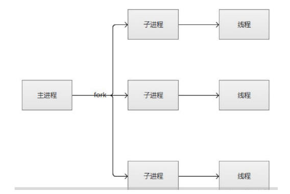
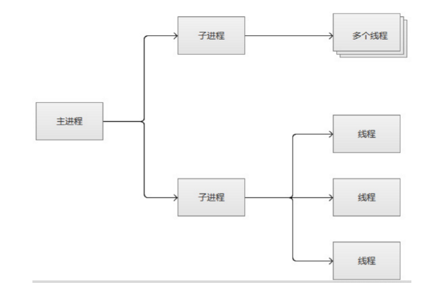
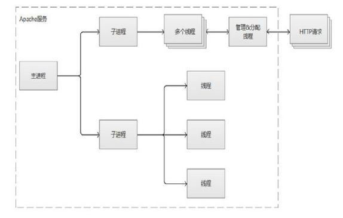
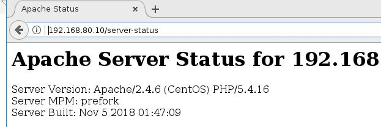
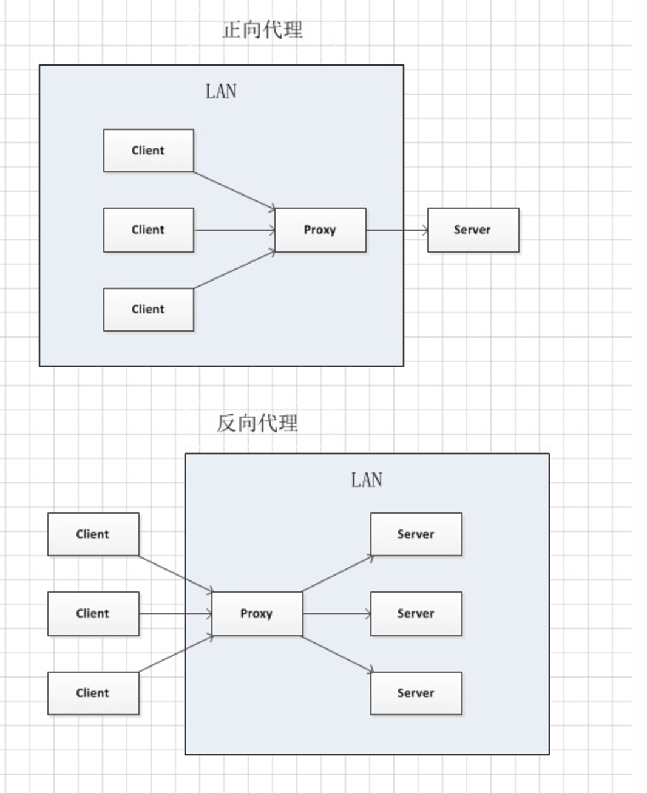

httpd简介
httpd是apache基金会（ASF：apache foundation）维护，其官网为httpd.apache.org,其基金会下有众多的著名软件。
！
http的版本
httpd 2.2 (Centos 6平台的默认版本，其event模型仍为测试模型)
httpd 2.4(Centos 7平台的默认版本，目前最新稳定版本，对event可用于生产环境中)
特性：
高度模块化：core + modules
DSO: Dynamic Shared Object 动态加/卸载
MPM：multi-processing module多路处理模块
HTTP的MPM工作模型
1. prefork：多进程I/O模型，
每个进程响应一个请求，一个主进程，用来生成和回收n个子进程，创建套接字，不响应请求，多个子进程，在服务启动时，预先生成多个空闲进程，等待请求，但最多不能超过1024个
pefork的配置：
StartServers 8：启动时最多启动多少个进程
MinSpareServers 5：最小空闲进程
MaxSpareServers 20：最大空闲进程
ServerLimit 256：服务器最多生成多少个个进程，最大为20000
MaxRequestsPerChild 4000：每个子进程最多响应多少个请求

2. worker：复用多进程I/O模型，
一个主进程生成m个子进程，每个进程生成n个线程，每个线程响应一个请求，可并发响应m*n个请求
缺点是当一个线程受影响时，该子进程的所有线程都会受到影响
worker的配置
StartServers 4：启动时启动多个子进程
MaxClinets 300：最多启动多少个线程
MinSpareThreads 25：最小空闲线程
MaxSpareThreads 75：最大空闲线程
ThreadsPerChild 25：每个进程最多可以启动多少个线程
MaxRequestsPerChild 0：每个线程最多可以响应多少个请求，0表示不做限制

3. event：事件驱动模型，
一个主进程生成m个子进程，每个进程直接响应n个请求，且有专门负责管理keepalive类型的线程，当有真是请求到达时，将请求传递给服务线程，执行完毕后，又允许释放

httpd的功能特性
httpd的常见特性：
1、CGI（Common Gateway Interface）
2、虚拟主机
3、支持反向代理
4、负载均衡
5、路径别名
6、丰富的用户认证机制
7、支持第三方模块
18.支持https协议，由mod_ssl模块提供
Httpd2.4新特性
MPM支持运行为DSO机制；以模块形式按需加载
在centos7上的httpd2.4上只有一个二进制程序
/usr/sbin/httpd，更改MPM模式只需要加载event或者worker模块即可
但是在centos6上的httpd2.2版本：
每个MPM模式都有各自对应的二进制程序
/usr/sbin/httpd
/usr/sbin/httpd.event
/usr/sbin/httpd.worker
如果更改MPM的模式，是需要改对应的二进制程序的
event MPM生产环境可用
异步读写机制
支持每模块及每目录的单独日志级别定义
每请求相关的专用配置
增强版的表达式分析式
毫秒级持久连接时长定义：httpd2.2只能精确到秒级别
上文提到http1.1和http2.0协议版本都支持持久连接，但是持久连接也是有时长的，所以在http中是可以定义连接时长(时长和传输请求两种方式)的
基于FQDN的虚拟主机不需要NameVirutalHost指令
httpd2.2创建虚拟主机时还需要NameVirutalHost指令
httpd2.4就不需要了
新指令，AllowOverrideList
支持用户自定义变量
更低的内存消耗
httpd配置文件
配置文件：
/etc/httpd/httpd.conf /etc/sysconfig/httpd
配置文件路径：
/etc/httpd/conf.d/*.conf
/etc/httpd/conf.modules.d/00-mpm.conf(修改httpd MPM的工作模式配置文件)
动态模块的路径：
/etc/httpd/modules
/usr/lib64/httpd/modules
检查配置语法：
httpd –t
主程序文件：
/usr/sbin/httpd
主进程文件：
/etc/httpd/run/httpd.pid
日志文件目录：
/var/log/httpd
access_log: 访问日志
error_log：错误日志
帮助文档包：
httpd-manual
Httpd常见配置
常见配置一般都在/etc/httpd/conf/httpd.conf的文件中，没有的配置选项可以加在httpd.conf文件最后，也可以放在/etc/httpd/conf.d/*.conf 创建一个 .conf文件，比如test.conf
[http2.4官网文档]http://httpd.apache.org/docs/2.4/
1.显示服务器版本信息
ServerTokens Prod[：Server: Apache
ServerTokens Major: Server: Apache/2
ServerTokens Minor: Server: Apache/2.0
ServerTokens Min: Server: Apache/2.0.41
ServerTokens OS: Server: Apache/2.0.41 (Unix)
ServerTokens Full : Server: Apache/2.0.41 (Unix)
打开f12调试模式，可以看到回应头的信息中带有apache的版本信息
也可以通过curl -I http://ip来显示头信息
建议使用：ServerTokens Prod
2.修改监听的IP和Port
Listen [IP:]PORT
(1) 省略IP表示为本机所有IP
(2) Listen监听端口至少一个，可以有多个端口
(3) 监听端口可以绑定到服务器的特定IP上，只能通过这个IP才能使用此端口
3.持久连接：默认KeepAlive是开启的
TCP连接建立后，每个资源获取完成后，不会断开连接，而是继续等待其它资源请求的进行，默认关闭持久连接
断开条件：时间限制：以秒为单位， 默认5s，httpd-2.4 支持毫秒级
副作用：对并发访问量大的服务器，持久连接会使有些请求得不到响应折衷：使用较短的持久连接时间
设置：
KeepAlive On|Off
KeepAliveTimeout 15
测试：telnet WEB_SERVER_IP PORT
GET /URL HTTP/1.1
Host: WEB_SERVER_IP
4.MPM（ Multi-Processing Module）多路处理模块：
prefork,worker,event
默认是prefork，因为后续的很多模块都依赖于prefork模块的
查看静态编译的模块
httpd -l
查看当前系统中httpd的静态编译及动态装载的加载的模块
httpd –M
动态模块加载：不需重启即生效
动态模块路径
/usr/lib64/httpd/modules/
切换使用的MPM模块
/etc/httpd/conf.modules.d/00-mpm.conf
选择要启用的MPM相关的LoadModule指令即可
prefork的配置：
StartServers 8
MinSpareServers 5 保留5个空闲子进程处理新的请求
MaxSpareServers 20 允许的最大空闲进程数
ServerLimit 256 最多进程数,最大20000，并发量建议最多10000
MaxRequestsPerChild 4000 子进程最多能处理的请求数量。在处理
MaxRequestsPerChild个请求之后,子进程将会被父进程终止，这时候子进程占用的内存就会释放(为0时永远不释放）
worker和prefork配置类似，只不过会有线程数量的限制
5.DSO： Dynamic Shared Object
加载动态模块配置
/etc/httpd/conf/httpd.conf
Include conf.modules.d/*.conf
配置指定实现模块加载格式：
LoadModule <mod_name> <mod_path>
模块文件路径可使用相对路径：
相对于ServerRoot（默认/etc/httpd）
示例：
LoadModule auth_basic_module modules/mod_auth_basic.so
6.定义’Main’ server的文档页面路径：存放页面的主目录
主目录是由DocumentRoot指令来设置的
网页文件默认是存在/var/www/html/下的，此处可以自定义
在/etc/httpd/conf/httpd.conf中
DocumentRoot默认网站的根目录的路径，默认值为/var/www/html，更改路径目录后，httpd2.4版本默认拒绝修改后的路径的访问，可使用以下字段开启访问
<Directory "PATH">
AllowOverride None
Require all granted
Options None
</Directory>
DirectoryIndex，网站默认主页的名称，默认值为index.html
ServerSignature On|Off|Email：默认访问不存在页面，产生错误文档，会暴露服务器的版本号等，默认为Off
注意：SELinux和iptables的状态
httpd访问控制
（1）<Directory>中“基于源地址”实现访问控制
Options {None|FollowSymlinks|Indexes|All}
在选项前的+，- 表示增加或删除指定选项
Indexes：默认URL下不存在主页文件时，就会将该网站的文件列表显示出来，通常下载网站使用该选项
注意：存放页面的主目录下没有index.html文件，但是此时即使加上options Indexes选项，页面也不会列出主目录下的所有文件，需把welcome.html文件改名或删除
FollowSymlinks：显示该网站的软链接指向的路径
None：全部禁用
All：全部允许
AllowOverride {None|All}，该指令只在<Directory>中有效，与访问控制相关的哪些指令可以放在指定目录下的.htaccess（由AccessFileName指定）文件中，覆盖之前的配置
All：.htaccess文有效
None：.htaccess中所有指令都无效
示例：
<directory "/data/www">
AllowOverride None
options Indexes FollowSymLinks
Require all granted
</directory>
(2).基于IP的访问控制
Reqired all granted，允许所有IP的访问
Require all denied ,拒绝所有主机访问
默认需在<RequireAll></RequireAll>
<RequireAll>
Required all granted
Required ip IPADDR 授权指定来源的IP访问
Require not ip IPADDR 拒绝特定的IP访问
</RequireAll>
控制特定的主机访问：
<RequireAll>
Require host HOSTNAME：授权特定主机访问
Require not host HOSTNAME：拒绝
</RequireAll>
不能有失败，至少有一个成功匹配才成功，即失败优先
<RequireAll>
Require all granted
Require not ip 172.16.1.1 拒绝特定IP
</RequireAll>
多个语句有一个成功，则成功，即成功优先
<RequireAny>
Require all denied
require ip 172.16.1.1 允许特定IP
</RequireAny>
示例：
拒绝特定IP地址访问/data/www目录，其他IP可以看到主目录下的文件列表
<directory /data/www>
options indexes
<RequireAll>
Require all granted
Require not ip 192.168.34.107
</RequireAll>
</directory>
查看http运行状态
<Location /server-status>
AllowOverride None
SetHandler server-status
require local
</location>
(3).基于用户的访问控制
basic：明文
1. 生成明文验证的虚拟账号
htpasswd -c /PATH/FILE USER
-c：创建文件，第一次创建时账号时使用
-s：sha加密算法
-D：删除指定用户
-p 明文密码
-d CRYPT格式加密，默认
-m md5格式加密
2. 修改配置
<Directory "PATH">
Options None
AllowOverride None
AuthName "STRING"
AutyType Basic
AuthUserFile "PATH/USER_FILE"
AuthGroupFile "Path/GROUP_FILE"：基于组的验证
Require user USER...| Require valid-user
Require group GROUP：基于组的验证
</Diectory>
digets：消息摘要
日志设定
format官方说明文档
http://httpd.apache.org/docs/2.2/mod/mod_log_config.html#formats
日志类型：访问日志(access_log)和错误日志(error_log)
日志的格式，先通过Logformat指令指定然后起个名，然后生成的日志再调用这个日志格式
/etc/httpd/conf/httpd.conf中定义了访问日志和错误日志的存放路径和日志格式定义
LogFormat "%h %l %u %t \"%r\" %>s %b \"%{Referer}i\" \"%{User-Agent}i\"" combined -->由Logformat指令定义完起一个combined名
CustomLog "logs/access_log" combined再调用这个日志格式
ErrorLog "logs/error_log"
定义的格式各个项说明
%h 客户端IP地址
%l 远程用户,启用mod_ident才有效，通常为减号“-”
%u 验证（basic，digest）远程用户,非登录访问时，为一个减号“-”
%t 服务器收到请求时的时间
%r First line of request，即表示请求报文的首行；记录了此次请求的“方法”，
“URL”以及协议版本
%>s 响应状态码
%b 响应报文的大小，单位是字节；不包括响应报文http首部
%{Referer}i
请求报文中首部“referer”的值；即从哪个页面中的超链接跳转至当前页面的，通过referer可以分析出网页
是否被调用了，比如说广告生效了，或者说搭建的个人网站被别人盗链了，占用了自己的服务器资源，
所以网站要加防盗链
%{User-Agent}i 请求报文中首部“User-Agent”的值；即发出请求的应用程序
httpd实现用户家目录共享
1.查看是否启用了user_dir.so模块
/etc/httpd/conf.modules.d/00-base.conf
2.配置
vim /etc/httd/conf.d/userdir.conf
<IfModule mod_userdir>
#UserDir diabled
UserDir public_html
<IfMoudle>
<Directory "/home/USER/public_html">
AuthType Basic
AuthUserFile="/etc/httd/conf/httpasswd"
Require user USER
</Directory>
3.创建目录
cd ~user
mkdir public_html
echo test > public_html/index.html
setfacl -m u:apache:x /home/用户家目录
4. 使用http://IP:PORT/~USER/index.html
httpd status页面
是否加载了mod_status.so
<Location "/status">
AutType Basic
AuthUserFile "/etc/httpd/conf/httpasswd"
AuthName "http status"
Require user USER
SetHandler server-status
</Location>

httpd别名
Alias /URL/ "/PATH"
示例：
Alias /data/ /data/web，当访问/test资源时，实际上对应磁盘上的/data/web目录下的资源
httpd虚拟主机
建立配置基于IP的配置文件
/etc/httpd/conf.d/vhosts.conf
<VirtualHost 172.16.100.6:80>
DocumentRoot "/www/a.com/htdocs"
</VirtualHost>
<VirtualHost 172.16.100.7:80>
DocumentRoot "/www/b.net/htdocs"
</VirtualHost>
基于端口的虚拟主机： 可和基于IP的虚拟主机混和使用
/etc/httpd/conf.d/vhosts.conf
listen 808
listen 8080
<VirtualHost 172.16.100.6:80>
DocumentRoot "/www/a.com/htdocs"
</VirtualHost>
<VirtualHost 172.16.100.6:808>
DocumentRoot "/www/b.net/htdocs"
</VirtualHost>
基于FQDN虚拟主机 基于FQDN的虚拟主机不再需要NameVirutalHost指令
<VirtualHost *:80>
ServerName www.b.net
DocumentRoot "/apps/b.net/htdocs"
</VirtualHost>
httpd的模块
mod_deflate，压缩页面优化传输速度，但只压缩适合压缩的资源如文本文件等
1. 启用模块mod_delate.so
2. 添加如下内容
AddOutputFilterByType DEFLATE text/plain
AddOutputFilterByType DEFLATE text/html
AddOutputFilterByType DEFLATE text/xml
mod_ssl，加密httpd
ssl会话简单流程：
1. 客户端发送一个加密方式，并向服务器请求证书
2. 服务器发送证书，并以该选定的加密方式给客户端
3. 客户端取得证书并验证该证书
1. 验证证书的来源合法性
2. 验证证书的完整性
3. 检查证书的有效期限
4. 检查证书是否在吊销列表中
5. 证书拥有者的名字，是否与访问的目标一致
4. 如果以上验证一致，则客户端生成临时会话密钥，并使用服务器的公钥加密此数据发送个服务器完成密钥交换
5. 服务器用此密钥加密用户请求资源，响应客户端的请求
注意：SSL是基于IP地址实现,单IP的主机仅可以使用一个https虚拟主机
使用yum install mod_ssl安装
(1) 为服务器申请数字证书
示例：通过私建CA发证书
(a) 创建私有CA
(b) 在服务器创建证书签署请求
(c) CA签证
配置文件在/etc/httpd/conf.d/ssl.conf配置如下字段
SSLCertificateFile PATH/FILE.crt
SSLCertificateKeyFile PATH/FILE.key
SSLCACertificateFile PATH/CA_FILE.crt
SSLCertificateChianFile PATH/CA_CHAIN.crt
httpd重定向
Redirect [status] old-url new-url
1. 临时重定向，Temp，返回状态码302
2. 永久重定向，Permanent，返回状态码301
示例：
Redirect temp / https://www.magedu.com/
HSTS
HSTS:HTTP Strict Transport Security
服务器端配置支持HSTS后，会在给浏览器返回的HTTP首部中携带HSTS字段。浏览器获取到该信息后，会将所有HTTP访问请求在内部做307跳转到HTTPS。 而无需任何网络过程
HSTS preload list
是Chrome浏览器中的HSTS预载入列表，在该列表中的网站，使用Chrome浏览器访问时，会自动转换成HTTPS。Firefox、Safari、Edge浏览器也会采用这 个列表
实现HSTS示例：
vim /etc/httpd/conf/httpd.conf
Header always set Strict-Transport-Security "max-age=31536000" RewriteEngine on
RewriteRule ^(/.*)$ https://%{HTTP_HOST}$1 [redirect=302]
httpd代理

正向代理是代理客户端，为客户端收发请求，使真实客户端对服务器不可见；
反向代理是代理服务器端，为服务器收发请求，使真实服务器对客户端不可见,如负载均衡等功能
启用反向代理
ProxyPass "/" "http://www.example.com/"
ProxyPassReverse "/" "http://www.example.com/"
特定URL反向代理
ProxyPass "/images" "http://www.example.com/"
ProxyPassReverse "/images" http://www.example.com/
示例： <VirtualHost *>
ServerName www.magedu.com
ProxyPass / http://localhost:8080/
ProxyPassReverse / http://localhost:8080/
</VirtualHost>
sendfile机制：提高网络传输的速度
1.在不使用sendfile机制，网络应用先通过读硬盘里的数据至kernel buffer中，期间需要从user mode切换至kernel mode
2.之后又需要将此数据从kernel buffer拷贝至user buffer中，期间必不可少需要从kernel mode切换至user mode，
3.然后将user buffer的数据拷贝至kernel socket buffer，此时也必须从user mode切换至kernel mode，
4.从kernel socket buffer拷贝此数据协议栈，此时也必须从kernel mode切换至user mode。完成网络传输。
因此sendfile机制就是用来简化上述步骤中4次模式切换和4次拷贝。
在使用sendfile机制时，网络应用调用该机制将数据拷贝至kernel buffer
2.然后该数据被直接拷贝至另外一个与socket相关的kernel buffer中，
3.直接将该数据从kernel socket buffer直接拷贝给协议栈，完成网络传输，此间不需要模式的切换，因为数据始终在kernel中
curl
是一种命令行工具，作用是发出网络请求，然后得到和提取数据，显示在"标准输出"（stdout）上面
curl [option] [url]
-A 指定用户代理
-I 只显示头部信息
-i 显示页面内容，包括报文头部
-L 如有3XX响应码，重新发请求至新位置
-e/--referer 来源网址
-D/--dump-header <file> 把header信息写入到该文件中
-o <file> 将网路文件保存为指定文件中
--cacert <file> 指定CA证书
-H <line> 自定义首部信息传递给服务器
--basic 使用HTTP基本认证
--limit-rate <rate> 设置传输速度
-f/--fail 连接失败时不显示http错误
-T/--upload-file <file> 上传文件
-u/--user <user[:password]> 设置服务器的用户和密码
-O 使用URL中默认的文件名保存文件到本地
-s/--silent 静音模式。不输出任何东西
-C 选项可对文件使用断点续传功能
-c/--cookie-jar <file name> 将url中cookie存放在指定文件中
-x/--proxy <proxyhost[:port]> 指定代理服务器地址
-X/--request GET|POST 向服务器发送指定请求方法
-#/--progress-bar 进度条显示当前的传送状态
-v 显示一次http通信的整个过程，包括端口连接和http request头信息。
--trace-ascii file 保存一次通信过程到文件
例：
查看网页源码
curl www.sina.com
自动跳转
curl -L www.sina.com
显示头信息
curl -I www.sina.com
显示一次http通信的整个过程，
curl -v www.sina.com
curl --trace-ascii output.txt www.sina.com 更详细
发送表单信息
GET
curl example.com/form.cgi?data=xxx
POST
curl -X POST --data "data=xxx" example.com/form.cgi
Referer字段 ,表示从哪里跳转过来。
curl -e http://www.example.com http://www.example.com
模拟User Agent ，设备信息，服务器会根据字段，针对不同设备，返回不同格式的网页
curl --user-agent "[User Agent]" [URL]
HTTP认证
curl -u name:password example.com
httpd自带的工具程序
httpd自带的工具程序 htpasswd：basic认证基于文件实现时，用到的账号密码文件生成工具 apachectl：httpd自带的服务控制脚本，支持start和stop
rotatelogs：日志滚动工具
access.log -->
access.log, access.1.log -->
access.log, acccess.1.log, access.2.log
httpd的压力测试工具
ab, webbench, http_load, seige
Jmeter 开源
Loadrunner 商业，有相关认证
tcpcopy：网易，复制生产环境中的真实请求，并将之保存
ab [OPTIONS] URL
来自httpd-tools包
-n：总请求数
-c：模拟的并行数
-k：以持久连接模式测试
ulimit –n # 调整能打开的文件数